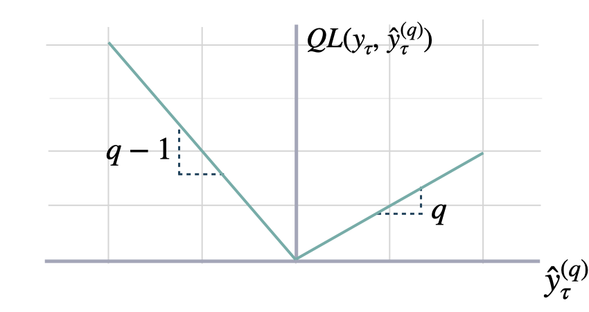
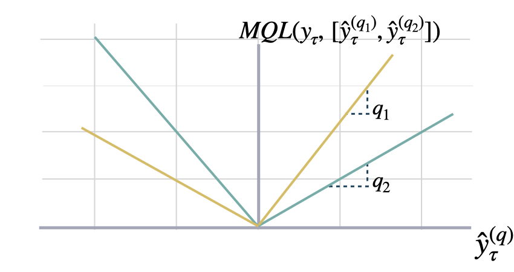

PyTorch Losses
All the losses are
torch.nn.modules which helps to automatically moved them across CPU/GPU/TPU devices with Pytorch Lightning.
1. Scale-dependent Errors
These metrics are on the same scale as the data.
Mean Absolute Error (MAE)
MAE.__init__
MAE.__init__ ()
Mean Absolute Error
Calculates Mean Absolute Error between y and y_hat. MAE measures the relative prediction accuracy of a forecasting method by calculating the deviation of the prediction and the true value at a given time and averages these devations over the length of the series.
\[ \mathrm{MAE}(\mathbf{y}_{\tau}, \mathbf{\hat{y}}_{\tau}) = \frac{1}{H} \sum^{t+H}_{\tau=t+1} |y_{\tau} - \hat{y}_{\tau}| \]
MAE.__call__
MAE.__call__ (y:torch.Tensor, y_hat:torch.Tensor, mask:Optional[torch.Tensor]=None)
Parameters:
y: tensor, Actual values.
y_hat: tensor, Predicted values.
mask: tensor, Specifies date stamps per serie to consider in loss.
Returns:
mae: tensor (single value).

Mean Squared Error (MSE)
MSE.__init__
MSE.__init__ ()
Mean Squared Error
Calculates Mean Squared Error between y and y_hat. MSE measures the relative prediction accuracy of a forecasting method by calculating the squared deviation of the prediction and the true value at a given time, and averages these devations over the length of the series.
\[ \mathrm{MSE}(\mathbf{y}_{\tau}, \mathbf{\hat{y}}_{\tau}) = \frac{1}{H} \sum^{t+H}_{\tau=t+1} (y_{\tau} - \hat{y}_{\tau})^{2} \]
MSE.__call__
MSE.__call__ (y:torch.Tensor, y_hat:torch.Tensor, mask:Optional[torch.Tensor]=None)
Parameters:
y: tensor, Actual values.
y_hat: tensor, Predicted values.
mask: tensor, Specifies date stamps per serie to consider in loss.
Returns:
mse: tensor (single value).

Root Mean Squared Error (RMSE)
RMSE.__init__
RMSE.__init__ ()
Root Mean Squared Error
Calculates Root Mean Squared Error between y and y_hat. RMSE measures the relative prediction accuracy of a forecasting method by calculating the squared deviation of the prediction and the observed value at a given time and averages these devations over the length of the series. Finally the RMSE will be in the same scale as the original time series so its comparison with other series is possible only if they share a common scale. RMSE has a direct connection to the L2 norm.
\[ \mathrm{RMSE}(\mathbf{y}_{\tau}, \mathbf{\hat{y}}_{\tau}) = \sqrt{\frac{1}{H} \sum^{t+H}_{\tau=t+1} (y_{\tau} - \hat{y}_{\tau})^{2}} \]
RMSE.__call__
RMSE.__call__ (y:torch.Tensor, y_hat:torch.Tensor, mask:Optional[torch.Tensor]=None)
Parameters:
y: tensor, Actual values.
y_hat: tensor, Predicted values.
mask: tensor, Specifies date stamps per serie to consider in loss.
Returns:
rmse: tensor (single value).

2. Percentage errors
These metrics are unit-free, suitable for comparisons across series.
Mean Absolute Percentage Error (MAPE)
MAPE.__init__
MAPE.__init__ ()
Mean Absolute Percentage Error
Calculates Mean Absolute Percentage Error between y and y_hat. MAPE measures the relative prediction accuracy of a forecasting method by calculating the percentual deviation of the prediction and the observed value at a given time and averages these devations over the length of the series. The closer to zero an observed value is, the higher penalty MAPE loss assigns to the corresponding error.
\[ \mathrm{MAPE}(\mathbf{y}_{\tau}, \mathbf{\hat{y}}_{\tau}) = \frac{1}{H} \sum^{t+H}_{\tau=t+1} \frac{|y_{\tau}-\hat{y}_{\tau}|}{|y_{\tau}|} \]
MAPE.__call__
MAPE.__call__ (y:torch.Tensor, y_hat:torch.Tensor, mask:Optional[torch.Tensor]=None)
Parameters:
y: tensor, Actual values.
y_hat: tensor, Predicted values.
mask: tensor, Specifies date stamps per serie to consider in loss.
Returns:
mape: tensor (single value).
Symmetric MAPE (sMAPE)
SMAPE.__init__
SMAPE.__init__ ()
Symmetric Mean Absolute Percentage Error
Calculates Symmetric Mean Absolute Percentage Error between y and y_hat. SMAPE measures the relative prediction accuracy of a forecasting method by calculating the relative deviation of the prediction and the observed value scaled by the sum of the absolute values for the prediction and observed value at a given time, then averages these devations over the length of the series. This allows the SMAPE to have bounds between 0% and 200% which is desireble compared to normal MAPE that may be undetermined when the target is zero.
\[ \mathrm{sMAPE}_{2}(\mathbf{y}_{\tau}, \mathbf{\hat{y}}_{\tau}) = \frac{1}{H} \sum^{t+H}_{\tau=t+1} \frac{|y_{\tau}-\hat{y}_{\tau}|}{|y_{\tau}|+|\hat{y}_{\tau}|} \]
References:
Makridakis S., “Accuracy measures: theoretical and practical concerns”.
SMAPE.__call__
SMAPE.__call__ (y:torch.Tensor, y_hat:torch.Tensor, mask:Optional[torch.Tensor]=None)
Parameters:
y: tensor, Actual values.
y_hat: tensor, Predicted values.
mask: tensor, Specifies date stamps per serie to consider in loss.
Returns:
smape: tensor (single value).
3. Scale-independent Errors
These metrics measure the relative improvements versus baselines.
Mean Absolute Scaled Error (MASE)
MASE.__init__
MASE.__init__ (seasonality:int)
Mean Absolute Scaled Error Calculates the Mean Absolute Scaled Error between y and y_hat. MASE measures the relative prediction accuracy of a forecasting method by comparinng the mean absolute errors of the prediction and the observed value against the mean absolute errors of the seasonal naive model. The MASE partially composed the Overall Weighted Average (OWA), used in the M4 Competition.
\[ \mathrm{MASE}(\mathbf{y}_{\tau}, \mathbf{\hat{y}}_{\tau}, \mathbf{\hat{y}}^{season}_{\tau}) = \frac{1}{H} \sum^{t+H}_{\tau=t+1} \frac{|y_{\tau}-\hat{y}_{\tau}|}{\mathrm{MAE}(\mathbf{y}_{\tau}, \mathbf{\hat{y}}^{season}_{\tau})} \]
Parameters:
seasonality: int. Main frequency of the time series; Hourly 24, Daily 7, Weekly 52, Monthly 12, Quarterly 4, Yearly 1.
References:
Rob J. Hyndman, & Koehler, A. B. “Another look at measures of forecast accuracy”.
Spyros Makridakis, Evangelos Spiliotis, Vassilios Assimakopoulos, “The M4 Competition: 100,000 time series and 61 forecasting methods”.
MASE.__call__
MASE.__call__ (y:torch.Tensor, y_hat:torch.Tensor, y_insample:torch.Tensor, mask:Optional[torch.Tensor]=None)
Parameters:
y: tensor (batch_size, output_size), Actual values.
y_hat: tensor (batch_size, output_size)), Predicted values.
y_insample: tensor (batch_size, input_size), Actual insample Seasonal Naive predictions.
mask: tensor, Specifies date stamps per serie to consider in loss.
Returns:
mase: tensor (single value).
4. Probabilistic Errors
These measure absolute deviation non-symmetrically, that produce under/over estimation.
Quantile Loss
QuantileLoss.__init__
QuantileLoss.__init__ (q)
Quantile Loss
Computes the quantile loss between y and y_hat. QL measures the deviation of a quantile forecast. By weighting the absolute deviation in a non symmetric way, the loss pays more attention to under or over estimation. A common value for q is 0.5 for the deviation from the median (Pinball loss).
\[ \mathrm{QL}(\mathbf{y}_{\tau}, \mathbf{\hat{y}}^{(q)}_{\tau}) = \frac{1}{H} \sum^{t+H}_{\tau=t+1} \Big( (1-q)\,( \hat{y}^{(q)}_{\tau} - y_{\tau} )_{+} + q\,( y_{\tau} - \hat{y}^{(q)}_{\tau} )_{+} \Big) \]
Parameters:
q: float, between 0 and 1. The slope of the quantile loss, in the context of quantile regression, the q determines the conditional quantile level.
References:
Roger Koenker and Gilbert Bassett, Jr., “Regression Quantiles”.
QuantileLoss.__call__
QuantileLoss.__call__ (y:torch.Tensor, y_hat:torch.Tensor, mask:Optional[torch.Tensor]=None)
Parameters:
y: tensor, Actual values.
y_hat: tensor, Predicted values.
mask: tensor, Specifies date stamps per serie to consider in loss.
Returns:
quantile_loss: tensor (single value).

Multi Quantile Loss (MQLoss)
MQLoss.__init__
MQLoss.__init__ (level=[80, 90], quantiles=None)
Multi-Quantile loss
Calculates the Multi-Quantile loss (MQL) between y and y_hat. MQL calculates the average multi-quantile Loss for a given set of quantiles, based on the absolute difference between predicted quantiles and observed values.
\[ \mathrm{MQL}(\mathbf{y}_{\tau},[\mathbf{\hat{y}}^{(q_{1})}_{\tau}, ... ,\hat{y}^{(q_{n})}_{\tau}]) = \frac{1}{n} \sum_{q_{i}} \mathrm{QL}(\mathbf{y}_{\tau}, \mathbf{\hat{y}}^{(q_{i})}_{\tau}) \]
The limit behavior of MQL allows to measure the accuracy of a full predictive distribution \(\mathbf{\hat{F}}_{\tau}\) with the continuous ranked probability score (CRPS). This can be achieved through a numerical integration technique, that discretizes the quantiles and treats the CRPS integral with a left Riemann approximation, averaging over uniformly distanced quantiles.
\[ \mathrm{CRPS}(y_{\tau}, \mathbf{\hat{F}}_{\tau}) = \int^{1}_{0} \mathrm{QL}(y_{\tau}, \hat{y}^{(q)}_{\tau}) dq \]
Parameters:
level: int list [0,100]. Probability levels for prediction intervals (Defaults median). quantiles: float list [0., 1.]. Alternative to level, quantiles to estimate from y distribution.
References:
Roger Koenker and Gilbert Bassett, Jr., “Regression Quantiles”.
James E. Matheson and Robert L. Winkler, “Scoring Rules for Continuous Probability Distributions”.
MQLoss.__call__
MQLoss.__call__ (y:torch.Tensor, y_hat:torch.Tensor, mask:Optional[torch.Tensor]=None)
Parameters:
y: tensor, Actual values.
y_hat: tensor, Predicted values.
mask: tensor, Specifies date stamps per serie to consider in loss.
Returns:
mqloss: tensor (single value).

Weighted MQLoss (wMQLoss)
wMQLoss.__init__
wMQLoss.__init__ (level=[80, 90], quantiles=None)
Weighted Multi-Quantile loss
Calculates the Weighted Multi-Quantile loss (WMQL) between y and y_hat. WMQL calculates the weighted average multi-quantile Loss for a given set of quantiles, based on the absolute difference between predicted quantiles and observed values.
\[ \mathrm{wMQL}(\mathbf{y}_{\tau},[\mathbf{\hat{y}}^{(q_{1})}_{\tau}, ... ,\hat{y}^{(q_{n})}_{\tau}]) = \frac{1}{n} \sum_{q_{i}} \frac{\mathrm{QL}(\mathbf{y}_{\tau}, \mathbf{\hat{y}}^{(q_{i})}_{\tau})}{\sum^{t+H}_{\tau=t+1} |y_{\tau}|} \]
Parameters:
level: int list [0,100]. Probability levels for prediction intervals (Defaults median). quantiles: float list [0., 1.]. Alternative to level, quantiles to estimate from y distribution.
References:
Roger Koenker and Gilbert Bassett, Jr., “Regression Quantiles”.
James E. Matheson and Robert L. Winkler, “Scoring Rules for Continuous Probability Distributions”.
wMQLoss.__call__
wMQLoss.__call__ (y:torch.Tensor, y_hat:torch.Tensor, mask:Optional[torch.Tensor]=None)
Parameters:
y: tensor, Actual values.
y_hat: tensor, Predicted values.
mask: tensor, Specifies date stamps per serie to consider in loss.
Returns:
mqloss: tensor (single value).
DistributionLoss
DistributionLoss.__init__
DistributionLoss.__init__ (distribution, level=[80, 90], quantiles=None)
DistributionLoss
This PyTorch module wraps the torch.distribution classes allowing it to interact with NeuralForecast models modularly. It shares the negative log-likelihood as the optimization objective and a sample method to generate empirically the quantiles defined by the level list.
Additionally, it implements a distribution transformation that factorizes the scale-dependent likelihood parameters into a base scale and a multiplier efficiently learnable within the network’s non-linearities operating ranges.
Available distributions: - Poisson - Normal - StudentT
Parameters:
distribution: str, identifier of a torch.distributions.Distribution class.
level: float list [0,100], confidence levels for prediction intervals.
quantiles: float list [0,1], alternative to level list, target quantiles.
References:
- PyTorch Probability Distributions Package: StudentT.
- David Salinas, Valentin Flunkert, Jan Gasthaus, Tim Januschowski (2020). “DeepAR: Probabilistic forecasting with autoregressive recurrent networks”. International Journal of Forecasting.
DistributionLoss.sample
DistributionLoss.sample (distr_args:torch.Tensor, loc:torch.Tensor, scale:torch.Tensor, num_samples:int=500)
Construct the empirical quantiles from the Pytorch Distribution, sampling from it num_samples independently.
Parameters
distr_args: Constructor arguments for the underlying Distribution type.
loc: Optional tensor, of the same shape as the batch_shape + event_shape of the resulting distribution.
scale: Optional tensor, of the same shape as the batch_shape+event_shape of the resulting distribution.
num_samples: int=500, number of samples for the empirical quantiles.
Returns
samples: tensor, shape [B,H,num_samples].
quantiles: tensor, empirical quantiles defined by levels.
DistributionLoss.__call__
DistributionLoss.__call__ (y:torch.Tensor, distr_args:torch.Tensor, loc:torch.Tensor, scale:torch.Tensor, mask:Optional[torch.Tensor]=None)
Computes the negative log-likelihood objective function. To estimate the following predictive distribution:
\[\mathrm{P}(\mathbf{y}_{\tau}\,|\,\theta) \quad \mathrm{and} \quad -\log(\mathrm{P}(\mathbf{y}_{\tau}\,|\,\theta))\]
where \(\theta\) represents the distributions parameters. It aditionally summarizes the objective signal using a weighted average using the mask tensor.
Parameters
y: tensor, Actual values.
distr_args: Constructor arguments for the underlying Distribution type.
loc: Optional tensor, of the same shape as the batch_shape + event_shape of the resulting distribution.
scale: Optional tensor, of the same shape as the batch_shape+event_shape of the resulting distribution.
mask: tensor, Specifies date stamps per serie to consider in loss.
Returns
loss: scalar, weighted loss function against which backpropagation will be performed.
Poisson Mixture Mesh (PMM)
PMM.__init__
PMM.__init__ (n_components=10, level=[80, 90], quantiles=None)
Poisson Mixture Mesh
This Poisson Mixture statistical model assumes independence across groups of data \(\mathcal{G}=\{[g_{i}]\}\), and estimates relationships within the group.
\[ \mathrm{P}\left(\mathbf{y}_{[b][t+1:t+H]}\right) = \prod_{ [g_{i}] \in \mathcal{G}} \mathrm{P} \left(\mathbf{y}_{[g_{i}][\tau]} \right) = \prod_{\beta\in[g_{i}]} \left(\sum_{k=1}^{K} w_k \prod_{(\beta,\tau) \in [g_i][t+1:t+H]} \mathrm{Poisson}(y_{\beta,\tau}, \hat{\lambda}_{\beta,\tau,k}) \right)\]
Parameters:
n_components: int=10, the number of mixture components.
level: float list [0,100], confidence levels for prediction intervals.
quantiles: float list [0,1], alternative to level list, target quantiles.
PMM.sample
PMM.sample (distr_args, num_samples=500, loc=None, scale=None)
PMM.__call__
PMM.__call__ (y:torch.Tensor, distr_args:Tuple[torch.Tensor], mask:Optional[torch.Tensor]=None, loc:Optional[torch.Tensor]=None, scale:Optional[torch.Tensor]=None)
Call self as a function.
Gaussian Mixture Mesh (GMM)
GMM.__init__
GMM.__init__ (n_components=1, level=[80, 90], quantiles=None)
Gaussian Mixture Mesh
This Gaussian Mixture statistical model assumes independence across groups of data \(\mathcal{G}=\{[g_{i}]\}\), and estimates relationships within the group.
\[ \mathrm{P}\left(\mathbf{y}_{[b][t+1:t+H]}\right) = \prod_{ [g_{i}] \in \mathcal{G}} \mathrm{P}\left(\mathbf{y}_{[g_{i}][\tau]}\right)= \prod_{\beta\in[g_{i}]} \left(\sum_{k=1}^{K} w_k \prod_{(\beta,\tau) \in [g_i][t+1:t+H]} \mathrm{Gaussian}(y_{\beta,\tau}, \hat{\mu}_{\beta,\tau,k}, \sigma_{\beta,\tau,k})\right)\]
Parameters:
n_components: int=10, the number of mixture components.
level: float list [0,100], confidence levels for prediction intervals.
quantiles: float list [0,1], alternative to level list, target quantiles.
GMM.sample
GMM.sample (weights, means, stds, num_samples=500)
GMM.__call__
GMM.__call__ (y:torch.Tensor, weights:torch.Tensor, means:torch.Tensor, stds:torch.Tensor, mask:Optional[torch.Tensor]=None)
Call self as a function.